1.1 Introduction and Scope
INTRODUCTION
⚠️
LETHAL VOLTAGE — MANDATORY SAFETY WARNING
This document describes construction of equipment producing voltages exceeding 100,000 volts.
Current as low as 10–20 milliamps across the heart causes ventricular fibrillation.
High-voltage arcs jump significant distances through air. Capacitors retain lethal charge after power removal.
Secondary X-ray generation may occur above 15kV. Read Section 1.2 in full before proceeding.
The author and SpaceCommsKit assume no liability for injury, death, or property damage.
YOU PROCEED ENTIRELY AT YOUR OWN RISK.
This chapter presents a comprehensive guide to the design, construction, and operation of Marx impulse generators —
devices capable of generating extremely high-voltage electrical pulses from relatively modest DC power sources.
Named after German physicist Erwin Marx who developed the concept in 1924, these circuits have found
applications ranging from EMP testing and materials research to advanced physics experiments.
The design documented here is a 14-stage implementation producing pulses in excess of 100 kilovolts.
Sufficient technical detail is provided to enable a knowledgeable practitioner to replicate the design —
including the complete account of why four different power supplies were destroyed in the process,
and what finally worked.
📖
DOCUMENT PHILOSOPHY
"My only hope would be to make as few mistakes as possible and to describe my outcomes as specifically as possible.
There is no good or bad outcome, there is only an outcome with as much detail in the process and observations
as one can give with the setting and equipment they have at their disposal."
Readers are encouraged to verify all claims through independent testing and contribute findings back to the community.
Applications and Motivation
- ⚡
EMP Testing — Simulating electromagnetic pulse effects on electronic systems and shielding
- ⚡
Materials Research — Dielectric breakdown studies in insulators, polymers, and novel composites
- ⚡
Plasma Generation — High-energy plasma creation for spectroscopy and surface treatment
- ⚡
Advanced Physics — Investigation of impulse-related phenomena including Podkletnov gravity modification hypotheses
- ⚡
HV Engineering Education — Demonstration of charge multiplication, Paschen's Law, and pulsed power systems
🔬
RESEARCH CONTEXT
Several researchers have explored the relationship between high-voltage pulsed systems and gravitational effects —
including Eugene Podkletnov's impulse gravity generator and replications by Tony Robertson and Dr. Chance Glenn.
These claims remain controversial in mainstream physics but represent a genuinely interesting avenue for
well-equipped experimental investigation. The advanced physics connection is documented in Section 1.10.
1.2 Comprehensive Safety Framework
SAFETY
☠️
READ THIS ENTIRE SECTION BEFORE ANY CONSTRUCTION BEGINS
High voltage does not warn you. The following protocols are not suggestions — they are the minimum
requirements for surviving this project.
Workspace Requirements
- ▸
Dedicated, isolated workspace — away from living areas, children, and pets
- ▸
Non-conductive flooring — rubber mats minimum; dedicated insulated floor preferred
- ▸
Minimum 3-foot clearance on all sides of the generator during energized operation
- ▸
CO₂ or ABC fire extinguisher — accessible without approaching the generator
- ▸
Emergency shutoff within reach — never require approach to the generator to cut power
- ▸
Ventilation — ozone from sustained arcing is a respiratory hazard
- ▸
Bright overhead lighting — clearly see all connections and potential hazards
Personal Protective Equipment
| Equipment | Specification | Purpose |
|---|
| Safety Glasses | ANSI Z87.1+ rated | Arc flash and debris |
| Face Shield | Full face, polycarbonate | Arc flash protection — worn over glasses |
| Insulating Gloves | Class 2, 17kV rated minimum | Electrical insulation during testing |
| Footwear | Rubber-soled, closed-toe, non-conductive | Floor insulation |
| Respirator | P100 or equivalent | Ozone and combustion products |
Capacitor Discharge Protocol — Non-Negotiable
🔋
HIGH-VOLTAGE CAPACITORS RETAIN LETHAL CHARGE FOR HOURS AFTER POWER REMOVAL
Treat every capacitor as charged until you have personally discharged and verified it with a calibrated HV probe.
Installing shorting jumpers before physical contact is mandatory.
- 01Remove all power. Wait minimum 5 minutes.
- 02Use a 1MΩ, 10W resistor on an insulated handle — short each capacitor terminal to ground through it.
- 03Verify zero voltage with calibrated HV probe at every capacitor terminal.
- 04Install shorting jumpers on all capacitors before any physical approach.
- 05Never touch terminals directly even after discharge. Make this a reflex, not a decision.
Emergency Procedures
🚨
ELECTRICAL SHOCK RESPONSE
DO NOT TOUCH THE VICTIM until power is confirmed off. Cut power immediately via emergency shutoff.
Call 911. Begin CPR only after power is confirmed off. Even an apparently unharmed victim must receive
immediate medical evaluation — high-voltage shock can cause delayed cardiac and tissue damage.
⚠️
BERYLLIUM HAZARD — MICROWAVE MAGNETRONS
Magnetrons contain beryllium ceramic components. If damaged, beryllium dust causes fatal progressive lung disease.
Never break, grind, or damage magnetrons. If breakage occurs, evacuate and consult hazmat disposal procedures.
⚡
GROUNDING ISOLATION — CRITICAL
The Marx ground pipe must NOT connect to building ground, water pipes, or any grounded structure.
It is a floating reference for the HV circuit only. Connection to building ground creates dangerous ground loops
and potential damage to household electronics and medical devices in adjacent spaces.
1.3 Theoretical Foundation
THEORY
The Marx generator solves a problem with profound elegance: how do you generate very high voltage when your
power supply only produces moderate voltage? Erwin Marx's 1924 answer —
charge capacitors in parallel at low voltage, then switch them into series to multiply — remains
one of the most beautiful circuits in electrical engineering. The physics is simple. The construction is not.
-
01
CHARGING PHASE — PARALLEL CONFIGURATION
All capacitors charge in parallel through the charging resistors. Each capacitor charges to the input voltage Vin. The resistors ensure all capacitors reach the same voltage while limiting charging current. During this phase, the circuit is deceptively quiet — all the energy accumulation is invisible, stored in electric fields inside ceramic dielectric layers.
-
02
DISCHARGE — CASCADE SERIES SWITCHING
When the first spark gap reaches its breakdown voltage, it conducts and applies approximately 2Vin across the second gap, triggering it. The cascade propagates through all stages in microseconds — far faster than any mechanical switch. All capacitors are suddenly in series. The CRACK you hear is this event: a microsecond pulse of ~100kV arc energy.
// Peak Output Voltage
Vout = n × Vin
n = number of stages | Vin = charge voltage per stage
Practical output ≈ 0.70–0.85 × theoretical (spark gap and resistive losses)
This build: n=14, Vin=10kV → Vout(theoretical) = 140kV | Vout(actual) ≈ 100–120kV
// Energy Stored Per Stage
E = ½CV²
C = capacitance (Farads) | V = charge voltage (Volts)
780pF @ 10kV: E = ½ × 780×10⁻¹² × (10,000)² = 0.039 joules per stage
Total: 14 × 0.039J = 0.546 joules — enough to be lethal many times over
// Marx Generator Cascade — Simplified to 3 of 14 Stages
HV IN R₁ R₃ R₅
(+)──┬───┤├──┬───────┤├──┬───────┤├──┬── ... ── OUTPUT(+) ~100-140kV
│ │ │ │
[C₁] SG₁ [C₂] SG₂ ... × 14 stages
│ │ │ │
(-)──┴───────┴────────────┴────────────┴── ... ── OUTPUT(-) = GND PIPE
CHARGE: C₁...C₁₄ all charge to V_in=10kV in parallel via R network
FIRE: SG₁ breaks at ~10kV → C₁+C₂ = ~20kV across SG₂
SG₂ fires instantly → C₁+C₂+C₃ = ~30kV across SG₃
Cascade continues — all 14 stages fire in microseconds
OUTPUT: 14 × 10kV = 140kV theoretical | ~100-120kV practical
τ_charge = R×C ≈ 2MΩ × 780pF × 14 ≈ 1.6 seconds (RC time constant)
Spark Gap Physics — Paschen's Law
The breakdown voltage of an air gap is not a fixed material constant — it depends on gap geometry,
electrode surface condition, humidity, and UV illumination. For small gaps in clean dry air at
atmospheric pressure, Paschen's Law gives the practical approximation:
// Approximate Air Breakdown Voltage (Small Gaps)
Vbreakdown ≈ 30 kV/cm × gap (cm)
Valid for gaps <10mm | Spherical electrodes improve uniformity and reduce field enhancement
Humidity, contamination, electrode oxidation, UV, and electrode geometry all shift the actual threshold
| Gap Distance | Breakdown Voltage | Use in This Design |
|---|
| 2 mm | ~6 kV | Conservative setting — reliable but lower output |
| 3 mm | ~9 kV | Typical operating gap — matched to 10kV charge voltage |
| 4 mm | ~12 kV | Higher voltage operation — erratic firing if humidity changes |
| 5 mm | ~15 kV | Maximum practical — cascade reliability decreases |
📐
DIELECTRIC STRENGTH OF AIR
~3 kV/mm for uniform electric fields. Drops dramatically near sharp edges (corona), on contaminated surfaces,
and with elevated humidity. Always design to a 2–3× safety factor. A component rated 10kV should be
operating at no more than 3.3–5kV in practice for reliable, long-term performance.
Insulation Material Selection
| Material | Dielectric Strength | Practical Notes for HV |
|---|
| Polycarbonate | ~15–20 kV/mm | Excellent but can become conductive when contaminated. May distort when cut. |
| PVC (thick wall) | ~12–16 kV/mm | Better shape retention after cutting. Easier to source in large diameters. |
| Phenolic (Garolite) | ~12–20 kV/mm | Traditional HV material. Excellent arc resistance. Less accessible. |
| PETG (3D printed) | ~10–15 kV/mm | Adequate for structural mounting fixtures. Not primary HV insulation. |
| FR4 PCB substrate | ~15 kV/mm dry | Avoid at HV nodes — moisture absorption degrades performance severely. |
1.4 Power Supply Design and Selection
POWER SUPPLY
The power supply proved to be the most critical and most humbling subsystem. An ideal Marx generator supply
provides 10–25kV DC output, 15–20mA current minimum, immunity to EMI from its own discharge events, and
current limiting for component protection. Getting all four simultaneously took four attempts and cost three
destroyed supplies. Here is the complete, unedited record.
Power Supply Requirements
- ▸
Output voltage: 10–25 kV DC (pulsating DC acceptable)
- ▸
Current capability: 15–20 mA minimum for reasonable charging times
- ▸
EMI compatibility: Must tolerate broadband RF from Marx discharge without resetting
- ▸
Current limiting: Protects against component failure and arc-over events
The Four Approaches — Complete Results
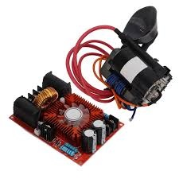
Figure 1-1. ZVS driver + flyback combo. 12–30V DC input, ~10kV pulsating DC output. The HV generation stage used in all four PSU configurations.
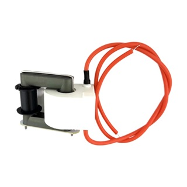
Figure 1-2. Alternate: 25kV AC flyback from hv-experimental.com. True AC output allows polarity selection and dual-generator configurations.
FAILED
Variable Bench PSU
0–30V / 0–10A / 300W — switchmode with digital control panel
- ✓ Allowed voltage and current optimization during setup
- ✗ Reset after every Marx discharge when placed nearby
- ✗ EMI coupling through control circuitry — unstable operation
- ✗ Required minimum 2m separation to function at all
- ✗ Risk of permanent microcontroller damage from repeated EMI
// VERDICT: Usable only at significant distance. Not practical for an integrated design.
DESTROYED
Shielded Switching PSU
24V DC / 15A / metal chassis with grounding and EMI filter
- ✓ Better EMI resistance than bench supply
- ✗ Random resets when mounted to Marx base plate
- ✗ Voltage fluctuations during EMI events damaged flyback transformer
- ✗ Complete system failure after extended testing session
// VERDICT: Metal shielding insufficient for pulsed operation. Voltage instability was destructive.
THERMAL FAILURE
Transformer + Rectifier
24V AC salvaged transformer + full-wave bridge rectifier, unregulated
- ✓✓ Completely immune to EMI — no digital control to disrupt
- ✓ Stable operation during discharges — right architecture
- ✗ Transformer undersized for continuous 15A load
- ✗ After 60s: transformer → rectifier → flyback cascade thermal failure
- ✗ Complete system loss before power could be cut
// VERDICT: Correct approach, wrong implementation. Proved the architecture. Proved we needed a bigger transformer.
RECOMMENDED ✓
Rewound MOT
Microwave Oven Transformer · 15V custom secondary · 35A / 200V bridge rectifier
- ✓✓ Completely EMI immune — iron, copper, and ceramic only in the signal path
- ✓✓ Massively overbuilt — designed for continuous microwave magnetron operation
- ✓✓ Free or near-free — from discarded microwaves
- ✓ Custom rewindable — exact voltage and current to specification
- ✓ Runs warm but well within safe temperature after extended continuous operation
// VERDICT: Zero failures through all testing. This is the one.
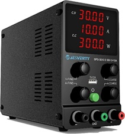
Figure 1-3. Supply #1 — Variable bench PSU. Precise control, zero EMI tolerance. Reset after every discharge.
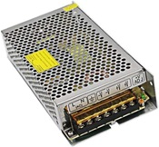
Figure 1-4. Supply #2 — Shielded switching PSU. Better EMI resistance, still failed. Voltage instability destroyed the flyback.
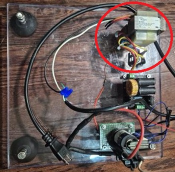
Figure 1-5. Supply #3 — Transformer + rectifier. Right architecture, undersized transformer. Thermal cascade failure at 60 seconds.
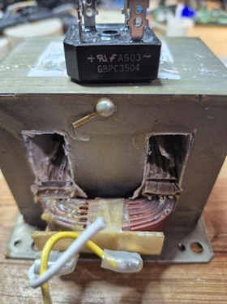
Figure 1-6. Supply #4 — Rewound MOT. The winner. Zero failures through all testing. Bridge rectifier (GBPC3504) mounted on top.
MOT Rewinding Specifications
Choose a microwave that feels unexpectedly heavy when you lift it — these contain traditional laminated iron-core
transformers rather than the lighter ferrite-core or switching-mode designs found in modern microwave ovens.
The weight is the tell. Remove the original secondary winding (typically wound with fine wire to ~2kV) and
replace it with a new secondary per the following specification:
| Parameter | Specification | Notes |
|---|
| Primary | 115V AC (unchanged) | Retain original primary winding — do not touch it |
| Secondary Voltage | 15–20V AC | After rectification: ~21–28V DC unregulated |
| Wire Gauge | #12 AWG stranded | Good for 20+ amps continuous. Do not use smaller gauge. |
| Turns Count | 8–12 turns | Depends on core geometry — verify with measurement |
| Bridge Rectifier Rating | 35A, 200V | Large margin for thermal headroom and reliability |
| Final HV Output | ~10kV pulsating DC | Via ZVS driver + flyback transformer stage |
Salvageable Microwave Components
Every discarded microwave is a complete parts kit. Save all of these:
| Component | Specification | Use in HV Work |
|---|
| MOT (Transformer) | 1–1.5kVA, laminated iron core | Primary target — rewind for custom HV power supply |
| Magnetron | 2.45 GHz, ~1kW output | RF generation, radar experiments, NMR research |
| HV Capacitor | 0.9–1.2µF at 2000V | Useful in power supply and pulse circuit applications |
| HV Diode | 12–15kV rated | High-voltage rectifier for custom supplies |
| Waveguide sections | Precision machined aluminum | Microwave coupling experiments |
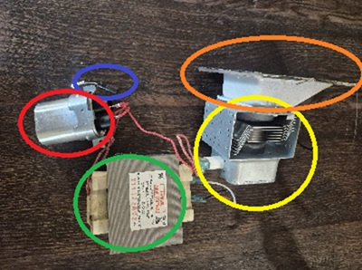
Figure 1-7. Complete salvage haul from one microwave oven. Green: MOT transformer. Red: HV capacitor (~1µF, 2kV). Orange: magnetron (2.45GHz). Yellow: waveguide sections. All typically in perfect working condition even from non-functional microwaves.
⚠️
CAPACITOR DISCHARGE MANDATORY BEFORE ANY DISASSEMBLY
Short the HV capacitor terminals together using an insulated screwdriver before removing any components.
The capacitor retains lethal charge indefinitely after the microwave is unplugged.
Treat every microwave as if the capacitor is charged until you have personally discharged it.
1.5 High-Voltage Stack Design
HV STACK
Complete Stack Specifications — 14 Stages
| Parameter | Value | Notes |
|---|
| Stage Count | 14 | Each: 1 capacitor + 2 resistors + 1 spark gap |
| Capacitor | 780 pF, 30kV doorknob ceramic | 1 per stage — threaded terminal for ring terminal mount |
| Charging Resistors | 1MΩ each, HV rated, 2 per stage | 30 total — cover all with heat shrink tubing |
| Spark Gaps | Brass sphere electrodes, 2–5mm adjustable | M3 threaded brass balls, 12AWG copper support arms |
| Total Series Capacitance | ~56 pF | 14 caps in series: C_total = C_stage / n |
| Total Charging Resistance | 28 MΩ | Sets RC time constant for charging cycle |
| Charge Time Constant τ | ~1.6 seconds | Determines maximum practical pulse repetition rate |
| Total Stored Energy | ~0.55 joules | 14 × ½ × 780pF × (10,000V)² — lethal magnitude |
| Theoretical Peak Output | 140 kV | 14 × 10kV per stage |
| Actual Measured Output | 100–120 kV | 70–85% efficiency — spark gap and resistive losses |
| Backbone Tube | 3" OD polycarbonate, 39" length | 35" longitudinal cutout exposes spark gaps |
Why Doorknob Capacitors?
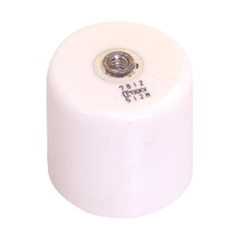
Figure 1-8. 780pF, 30kV doorknob capacitor. The ceramic dielectric offers low ESR for fast discharge. Threaded terminal stud mounts directly to a ring terminal with a machine screw. Available from surplussales.com.
Figure 1-9. 3" OD clear polycarbonate tube — the structural backbone. A 35" longitudinal cutout exposes the spark gaps while maintaining rigidity and full visual access to every stage.
Doorknob capacitors — named for their shape — are ceramic high-voltage pulse capacitors.
The ceramic dielectric provides very low equivalent series resistance (ESR), enabling the fast, high-current
discharge pulse the Marx generator demands. The physically robust ceramic body withstands mechanical shock
from repeated discharge events. The threaded metal terminal stud simplifies mounting to ring terminals —
a repeatable, reliable mechanical and electrical connection.
For this design: 780 pF at 30kV from Surplus Sales of Nebraska.
The 30kV voltage rating provides a 3× safety factor over the 10kV operating charge voltage.
This margin is real engineering, not conservatism — transient overvoltages during cascade firing
briefly exceed steady-state values.
Spark Gap Construction and Electrode Physics
Each gap consists of two M3-threaded brass ball electrodes on 12 AWG solid copper support arms.
Brass is preferred over steel: brass erodes more slowly and maintains a smoother spherical surface
that ensures consistent electric field distribution and more repeatable breakdown voltage across
hundreds of discharge events. Steel electrodes develop pits and irregular surfaces that degrade
cascade consistency within tens of pulses.
⚙️
GAP UNIFORMITY IS THE SINGLE MOST CRITICAL VARIABLE IN THIS DESIGN
All 14 gaps must be set to identical spacing using feeler gauges. A variation of even 0.5mm between stages
can stall the cascade — the next gap won't receive enough overvoltage to fire, and the discharge stops
mid-stack. This causes partial energy release, elevated stress on already-fired stages, and erratic output.
Equalize gaps every session.
// Component Preparation — From Raw Parts to Finished Stage
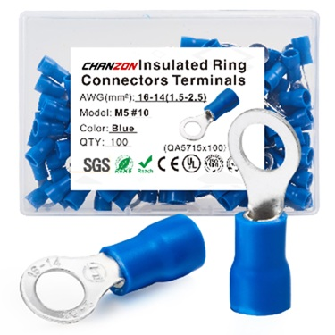
Figure 1-10. Insulated ring terminals — the backbone of every electrical connection in this build. Every capacitor terminal, every resistor lead, every spark gap wire ends in a ring terminal on a machine screw.
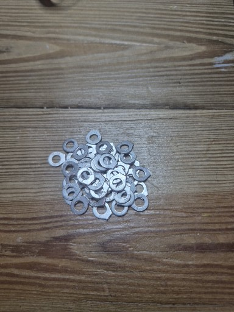
Figure 1-11. Hardware assortment — M3 washers and lock washers. Lock washers are mandatory on all high-voltage connections. Vibration from discharge events will loosen plain fasteners over time.
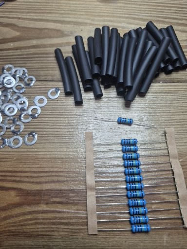
Figure 1-12. Raw stage components — 1MΩ charging resistors (blue, on tape), heat shrink tubing sections, and hardware. Two resistors and one section of heat shrink per stage, 14 stages = 28 resistors minimum plus spares.
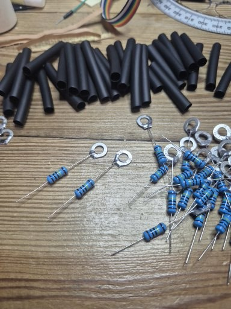
Figure 1-13. Resistor preparation in progress. Ring terminals crimped to both leads, heat shrink positioned before shrinking. Every resistor body gets fully covered — no exposed resistor surface at high-voltage nodes.
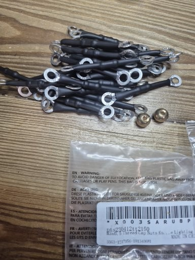
Figure 1-14. Completed resistor assemblies (top) with heat shrink applied. Fresh copper spark gap support arms below — 12 AWG solid copper wire with ring terminals crimped. Brass electrode balls visible in packaging.
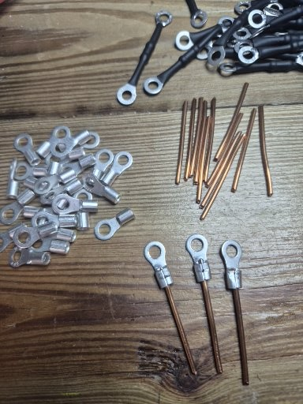
Figure 1-15. Spark gap arm components. Uninsulated ring terminals for the spark gap connections (copper-to-copper contact required for conductivity), insulated black assemblies for the resistor-to-capacitor connections.
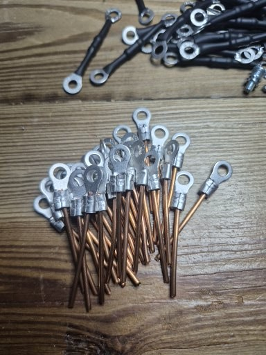
Figure 1-16. Completed spark gap support arms — all 28 pieces. Bare copper ring terminals at the ends will clamp between the brass ball M3 stud and a machine screw nut. Bare copper ensures lowest resistance contact.
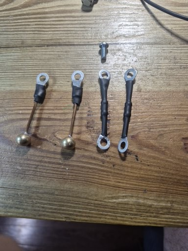
Figure 1-17. Completed spark gap assemblies with brass electrode balls installed. Left pair shows the gap electrode arms with balls. Right pair shows the heat-shrink insulated charging resistor assemblies alongside M3 hardware.
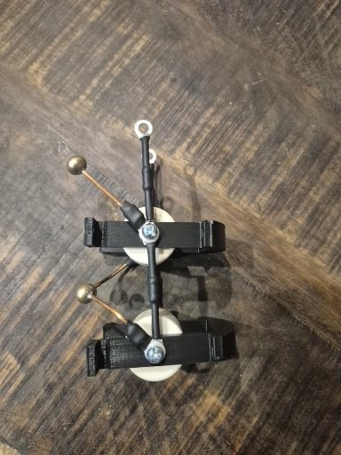
Figure 1-18. Single completed stage — doorknob capacitor secured in its 3D-printed PETG mounting frame, spark gap arms positioned with brass electrode balls facing outward toward the ground pipe. This unit repeats 14 times up the polycarbonate backbone.
3D Printed Components — STL Files Available via Patreon
All printed parts are PETG for improved temperature resistance over PLA. These are structural components
providing mounting and positioning — they do not form the primary high-voltage insulation path.
All STL files available to Patreon Tier 2 subscribers via Google Drive link in the Patreon post.
| Component | Material | Qty | Print Time | Function |
|---|
| Capacitor Mounting Frame | PETG | 14 | ~20 min ea. | U-shaped mount — holds doorknob cap to backbone tube |
| Base Mount Disc | PETG | 1 | ~45 min | 80mm×60mm disc — mounts polycarbonate tube to base plate via ¼-20 bolt |
| Tube Cap | PETG | 1 | ~30 min | Top cap — base for output electrode assembly |
| Electrode Arm Part 1 | PETG | 1 | ~25 min | Vertical adjustment arm for output electrode position |
| Electrode Arm Part 2 | PETG | 1 | ~20 min | Electrode arm mount bracket |
| Ground Pipe Support Block | PLA | 1 | ~30 min | Far-end stabilizer for copper ground pipe |
Grounding System — Isolated Copper Pipe
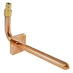
Figure 1-19. Copper ground pipe base mount — a standard plumbing stub-out fitting with a bent copper strap screwed to the base plate. Simple, zero-resistance, and completely immune to EMI. The ½" pipe attaches here and runs the full height of the stack.
A ½-inch copper plumbing pipe runs parallel to the stack, mounted vertically on the base plate via a
plumbing stub-out fitting and bent copper strap. All 14 spark gap lower terminals connect to this pipe
via 14 AWG copper wire. It provides the low-resistance return path for the fast, high-current discharge pulse.
A 3D-printed support block stabilizes the far end.
⚡
THIS PIPE MUST REMAIN COMPLETELY ISOLATED FROM BUILDING GROUND
Floating ground reference for the Marx circuit only. Connection to building electrical ground, water pipes,
or any grounded structure creates unexpected current paths, damages household electronics, trips GFCIs,
and introduces hazards that are not present in the isolated design.
1.6 Mechanical Construction
CONSTRUCTION
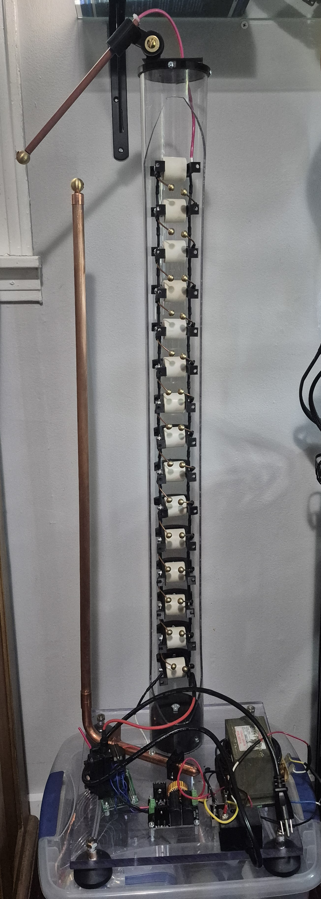
Figure 1-20. Completed 14-stage Marx generator. Clear polycarbonate backbone housing the capacitor stack with brass spark gap arms extending outward, copper ground pipe running parallel on the left, output electrode assembly at top, and base-mounted MOT power supply. This is what we are building.
Base Plate
| Parameter | Specification | Notes |
|---|
| Material | ¼" polycarbonate or ½" plywood | Polycarbonate preferred for insulation; plywood cheaper and adequate |
| Minimum Size | 24" × 18" | Provides adequate clearance around all components |
| Mounting | Pre-drilled, countersunk holes | Prevents stress concentrations at fastener locations |
| Feet | Rubber or cork pads | Elevates base, provides non-slip surface and additional insulation |
Complete System Layout — Bottom to Top
- 1
BASE LEVEL — POWER SUPPLY
Rewound MOT + 35A bridge rectifier, input terminal block, safety ground connections. ZVS driver module and flyback transformer mounted here. HV output from flyback to Marx stack input via 18 AWG HV wire.
- 2
STACK BASE — FIRST STAGE
First-stage capacitor, input charging resistors, lower electrode. 3D-printed base mount disc secures polycarbonate tube via ¼-20 bolt. Sheet metal screws secure tube to disc. Ground pipe base mount at this level.
- 3
STACK BODY — 39 INCHES, 14 STAGES
14 stages — capacitor mounts bolted through polycarbonate tube wall. All resistors covered in heat shrink. Spark gap arms extend outward from tube toward ground pipe. 35" longitudinal cutout exposes spark gaps for visibility and adjustment.
- 4
STACK TOP — OUTPUT ELECTRODE ASSEMBLY
3D-printed tube cap hosts electrode arm assembly. ¼-20 threaded rod provides vertical height adjustment. Phenolic tube houses 10 AWG stranded wire from final capacitor to output. Large brass ball electrode minimizes corona discharge.
- 5
GROUND RAIL — COPPER PIPE
½" copper pipe parallel to stack. Stub-out fitting and bent copper strap at base. 3D-printed support block at far end. All 14 spark gap lower terminals connect via 14 AWG wire. Provides low-resistance return path for the discharge pulse current.
Pre-Operation Alignment Checklist
- □ Spark gaps measured and equalized with feeler gauges — all identical spacing
- □ All capacitors perpendicular to backbone, terminals accessible
- □ Ground rail continuity verified — <1Ω total resistance
- □ All resistors covered with heat shrink — no exposed resistor bodies
- □ No conductive objects within minimum clearance distances
- □ Mechanical stability — shake test, no loose components or rattling hardware
- □ Emergency shutoff tested and accessible
- □ PPE in good condition and within arm's reach
- □ Fire extinguisher accessible without approaching the generator
- □ Second person present — never operate alone
⚠️
POLYCARBONATE DISTORTION NOTE
Polycarbonate tube frequently collapses slightly inward when the longitudinal cutout is made, due to residual
extrusion stress. Thick-wall PVC pipe maintains shape better after cutting and is easier to source in 3" diameter.
If using polycarbonate, cut slowly and allow the material to relax before mounting components.
1.7 Commissioning and Testing
COMMISSIONING
🚨
FIRST POWER-ON PROTOCOL — NO DEVIATIONS PERMITTED
The first energization is the most dangerous moment in this build. Unknown construction errors only reveal
themselves under voltage. Clear all personnel to 10 feet minimum. Don full PPE.
Verify emergency shutoff is in your hand. Announce "POWERING HIGH VOLTAGE" loudly.
Apply power via remote switch. Retreat immediately. Observe for 30 seconds before approaching.
Progressive Power-On Sequence
- 1
MOT ONLY — LOW VOLTAGE VALIDATION
Power MOT without ZVS/flyback connected. Verify rectifier output: 21–28V DC. Check for excessive heat, abnormal sounds, or burning smell. Run 60 seconds, monitor current draw. Stable → proceed to Stage 2.
- 2
HV GENERATION — FLYBACK ONLY, NO MARX
Connect ZVS + flyback to power supply. Marx stack disconnected. Power on. Observe HV output with 6+ inch air gap for safety. Listen for ZVS oscillation. Observe corona or spark at HV terminal (~10kV expected). Run 30 seconds, monitor for component heating. Stable → proceed to Stage 3.
- 3
MARX CHARGING — SPARK GAPS AT MAXIMUM SPACING
Connect flyback to Marx input. Set ALL spark gaps to maximum spacing — no discharge expected. Power for 10 seconds. Immediately power off and discharge all capacitors via the standard procedure. Verify capacitors charged by measuring voltage at several stages. This confirms charging works without triggering a discharge.
- 4
FIRST FULL DISCHARGE — THE MOMENT OF TRUTH
Set spark gaps to operating distance (3–4mm typical). Clear area. Full PPE. Verify emergency shutoff. Power on and step back. After several seconds: expect a loud CRACK, bright arc flash, possible EMI effects (lights flickering, radio static). Allow a single discharge. Power off immediately. Wait 5 minutes. Discharge capacitors. Inspect carefully. Congratulations — welcome to pulsed power research.
Output Voltage Measurement Methods
| Method | Equipment Required | Accuracy |
|---|
| Spark Gap Method | Calibrated brass sphere electrodes at known spacing | ±15% — affected by humidity and electrode condition |
| HV Probe + Oscilloscope | 1000:1 or 10000:1 divider probe | ±5% — best practical method for the bench |
| Arc Length Estimate | Ruler — measure max arc to grounded target | ±20% — V ≈ 30kV/cm × arc length (cm) |
Operating Limits
| Parameter | Maximum | Reason |
|---|
| Continuous Operation | 60 seconds | MOT thermal capacity limit |
| Pulses per Session | 30–40 pulses | Spark gap electrode erosion monitoring |
| Daily Run Time | 15 minutes cumulative | Prevents accelerated component aging |
| Ambient Temperature | <30°C (86°F) | Higher temps reduce cooling effectiveness |
| Rest Between Sessions | 30 minutes minimum | Full thermal recovery |
📊
BREAK-IN PERIOD — EXPECT FIRST 10–20 DISCHARGES TO VARY
Output voltage typically increases as spark gaps stabilize and brass electrodes develop optimal surface texture.
Weak connections or components may fail during break-in — this is expected and far preferable to failure during
a critical experiment session. After break-in, performance stabilizes. Document every session in a test log:
date, temperature, humidity, gap settings, arc length, pulse count, anomalies.
1.8 Troubleshooting Guide
TROUBLESHOOTING
Power Supply Problems
| Symptom | Probable Cause | Solution |
|---|
| No HV output from flyback | ZVS driver not oscillating | Check input voltage (12–30V DC required). Verify MOSFET gates. Check feedback network continuity. |
| Flyback arcing internally | Internal insulation failure | Replace flyback transformer. Verify input voltage within rated limits. |
| PSU resets on Marx discharge | EMI into control circuitry | Switch to transformer-based supply (MOT). Increase separation. This is the Supply #1 and #2 problem. |
| Transformer overheating | Undersized for continuous load | Reduce duty cycle. Upgrade to larger MOT. Verify #12 AWG secondary winding wire. |
| Output voltage drops under load | Insufficient current capability | Check wire gauge. Verify rectifier rating. Upgrade transformer if needed. |
Discharge Problems
| Symptom | Probable Cause | Solution |
|---|
| No discharge occurs | Spark gaps too wide | Reduce gap spacing 0.5mm at a time until cascade fires. This is almost always the first issue encountered. |
| Only some stages discharge | Non-uniform gap spacing | Measure every gap with feeler gauges. Equalize precisely. The most common operational problem. |
| Weak output arc | Partial charging or stage failure | Increase charge time. Check for surface tracking on insulation. Test each stage individually. |
| Erratic firing pattern | Contaminated spark gaps | Clean brass spheres with fine abrasive. Remove oxidation. Low humidity environment helps significantly. |
| Discharge to ground pipe instead of electrode | Insufficient clearance | Increase separation between stack and ground pipe. Adjust output electrode height. |
| Component arcing over | Insufficient creepage distance | Increase spacing. Check for sharp metal edges. Verify no copper traces in the field path. |
EMI and Interference
| Effect Observed | Severity | Response |
|---|
| Radio or TV static during discharge | Normal | Marx is a broadband RF source. Expected and unavoidable. |
| Fluorescent lights flickering | Normal | Confirms successful discharge. Consider it a performance indicator. |
| Nearby electronics resetting | Investigate | Increase separation. Add ferrite beads on nearby power cables. |
| Ground fault interrupters tripping | Investigate | Verify Marx ground is fully isolated from building ground. Check for unintended ground connections. |
| Neighbor electronics affected | Limit operation | Avoid operating near medical equipment. Inform neighbors of test schedule. |
Diagnostic Test Points — Power OFF, All Caps Discharged
TP1
MOT Primary Input
120V AC
TP2
MOT Secondary Output
15–20V AC
TP3
After Bridge Rectifier
21–28V DC
TP4
ZVS Driver Input
Matches TP3
TP5
Flyback HV Output
~10kV DC
TP6
Capacitor 1 (Top Terminal)
Matches TP5 after charge
TP7
Each Subsequent Cap
Verify charging
TP8
Output Electrode
Highest voltage point
TP9
Ground Rail to All Gaps
<1Ω continuity
1.9 Bill of Materials
BILL OF MATERIALS
Complete parts list for the 14-stage Marx generator. Prices approximate and subject to change. Salvage where possible — especially the MOT.
// High-Voltage Components
| Item | Specification | Qty | Source | Est. Cost |
|---|
| Doorknob Capacitor | 780 pF, 30kV ceramic | 14 | surplussales.com | $140–200 |
| Charging Resistor | 1MΩ, HV rated | 30 | eBay / electronics suppliers | $30–50 |
| Brass Electrode Balls | M3 threaded, 8–10mm | 28 | Amazon B0C1Y97R11 | $15–20 |
| Copper Wire (spark gaps) | 12 AWG solid bare | 50 ft | Hardware store | $15–25 |
| HV Output Wire | 10–18 AWG, HV insulation rated | 25 ft | Electronics supplier | $20–30 |
// Power Supply Components
| Item | Specification | Qty | Source | Est. Cost |
|---|
| ZVS Driver + Flyback Combo | 12–30V input, ~10kV output | 1 | Amazon | $20–30 |
| Microwave Oven Transformer | 1–1.5kVA heavy iron-core | 1 | Salvage / thrift stores | $0–15 |
| Bridge Rectifier | 35A, 200V rated | 1 | Electronics supplier | $5–10 |
| Secondary Winding Wire | #12 AWG stranded | 20 ft | Hardware store | $10–15 |
| AC Flyback (alternate) | 25kV AC output | 1 (opt) | hv-experimental.com | $30–50 |
// Structural and Hardware
| Item | Specification | Qty | Source | Est. Cost |
|---|
| Polycarbonate Tube | 3" OD, 39" minimum length | 1 | Amazon B09LFQ5PL6 | $30–50 |
| Base Plate | ¼" polycarbonate, 24"×18" | 1 | Plastics supplier / hardware | $20–35 |
| Copper Pipe (ground rail) | ½" diameter, 42" length | 1 | Hardware / plumbing | $8–15 |
| Plumbing Stub-Out Fitting | ½" copper | 1 | Hardware store | $5–8 |
| Ring Terminal Assortment | Insulated, multiple sizes | 1 pkg | Amazon B0CP5Q2PJP | $10–15 |
| Heat Shrink Tubing | Assorted sizes, 2:1 ratio | 1 kit | Electronics supplier | $10–15 |
// Total Project Cost
| Category | Cost Range |
|---|
| High-Voltage Components | $220–325 |
| Power Supply Components | $65–100 |
| Structural Components | $85–135 |
| Hardware and Fasteners | $60–95 |
| 3D Printed Components (filament) | $21–30 |
| TOTAL — MATERIALS ONLY | $451–685 |
Costs can be reduced significantly by salvaging components (MOT from a discarded microwave is free, copper wire
and hardware from hardware stores). Many builders complete similar projects under $300 through judicious sourcing.
The MOT is the single most expensive-to-buy but easiest-to-find-free component in the design.
1.10 References and Further Reading
REFERENCES
Essential Video Resources
ELECTRICAL SAFETY DEMONSTRATION →Humorous but instructive. Every "ouch" represents a circumstance that could have been fatal. Required viewing before beginning any high-voltage work. Watch it twice.
Advanced Physics and Research Connections
PODKLETNOV'S IMPULSE GRAVITY GENERATOR →Discussion of the theoretical connection between high-voltage impulse generators and gravitational effects. Controversial but experimentally interesting — the kind of thing Section 7 exists to explore.
PAIS PATENTS — US20170313446A1 →US Patent describing high-frequency gravitational wave generation concepts using electromagnetic fields. Describes similar principles in modern patent terminology.
Component Sources
| Component | Supplier | Notes |
|---|
| HV Doorknob Capacitors | surplussales.com | Surplus Sales of Nebraska — excellent HV component source, well-priced |
| AC Flyback Transformer (25kV) | hv-experimental.com | Purpose-built for serious high-voltage work |
| M3 Brass Electrode Balls | Amazon B0C1Y97R11 | Threaded brass spheres ideal for spark gap electrodes |
| Insulated Ring Terminals | Amazon B0CP5Q2PJP | Assorted sizes for all connection points |
| 3" Polycarbonate Tube | Amazon B09LFQ5PL6 | Clear polycarbonate tube for backbone structure |
Books and Textbooks
Foundations of Pulsed Power Technology — Shipman et al.
The authoritative textbook on pulse power systems. Comprehensive treatment of Marx generators, energy storage, and switching. Essential for serious practitioners.
High Voltage Engineering Fundamentals — Kuffel and Zaengl
Classic reference covering Paschen's Law, dielectric breakdown, insulation coordination, and testing methodology. Standard reference for HV design.
Pulsed Power — Guenther and Kristiansen
Advanced treatment of Marx generators, pulse-forming networks, and high-power switching. Graduate-level technical depth.
Standards and Safety References
- ▸
NFPA 70E — Electrical Safety in the Workplace — arc flash hazard analysis methodology
- ▸
IEEE 1584 — Guide for Performing Arc-Flash Hazard Calculations
- ▸
IEC 60664-1 — Insulation Coordination for Equipment within Low-Voltage Systems
Communities
- ▸
4HV.org — The high-voltage community forum. Decades of collective knowledge from experienced builders worldwide.
- ▸
r/highvoltage — Reddit community for HV enthusiasts of all levels
- ▸
Physics Forums — High Energy Physics and Theory sections for academic depth and peer review
- ▸
Hackaday.io — High voltage project documentation, active community
Acknowledgments
This chapter builds on decades of work by countless engineers, physicists, and amateur experimenters.
Special acknowledgment to Erwin Marx for the original circuit topology (1924) —
one of the most elegant solutions in electrical engineering. To the high-voltage amateur community
for open sharing of designs and hard-won experience. To YouTube educators who make complex topics accessible.
And to surplus electronics dealers who keep obsolete but irreplaceable components available.
⚠️
FINAL LEGAL DISCLAIMER
The information in this document is provided for educational and research purposes only.
The author, SpaceCommsKit, and associated parties make no warranties regarding accuracy, completeness,
or suitability of this information, and assume no liability for injury, death, property damage,
or any other loss resulting from its use. Do not proceed without appropriate training, equipment,
insurance, and legal authority. YOU PROCEED ENTIRELY AT YOUR OWN RISK.
// END OF CHAPTER 1
MARX GENERATOR V1
HV-001 · PUBLICATION VERSION 1.0 · OCTOBER 2025 · SPACECOMMSKIT · TENNESSEE, USA